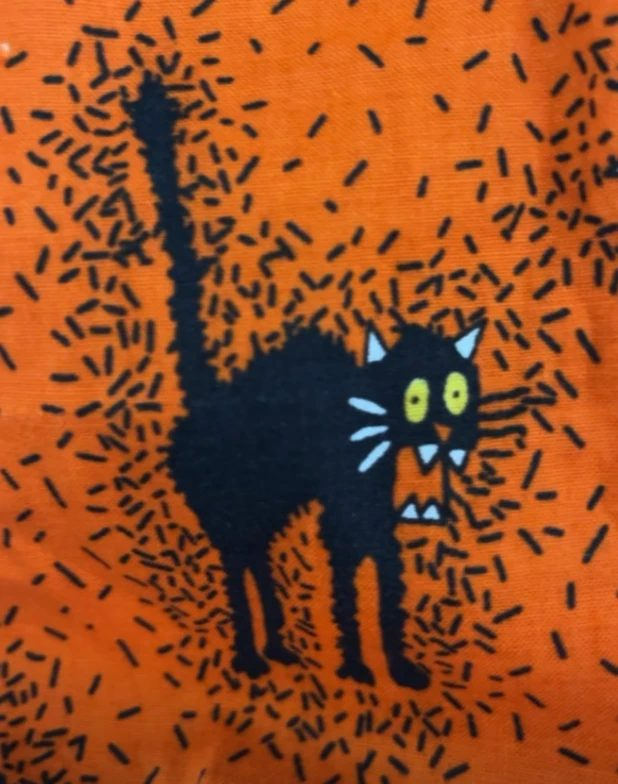

How it's made
Dye Layer Stitch
Each landscape moves through four stages, all worked by hand in the studio.


Dye the cloth
White cotton and linen go into small batches of fiber-reactive dye, so the color lives in the fiber rather than on the surface. Read the dye notes.
Cut the ridges
Each mountain layer is traced onto fusible interfacing, fused to its fabric, and the composition is refined before anything is fixed in place.
Stitch it down
Layers are applied one at a time, back to front, alternating straight and zigzag stitches.
Embellish & finish
Couched variegated thread for clouds, wool roving under tulle, sequin mesh, French knots on the closest ridges. Each piece is then squared and finished for hanging or framing.
RAW EDGE
A scant ⅛″ edge stitched down flat. It softens over time for a textural, painterly finish.
TURNED EDGE
A ¼″ allowance pressed under before stitching, for a crisp, classic appliqué edge.
Every technique in the pattern is in the Stitch Library.
Video
In the studio
Reels on Instagram and sewing videos on YouTube.
 YOUTUBEBasic shoulder shortening
YOUTUBEBasic shoulder shorteningMy most-watched video: how to shorten the shoulders for a better fit.

REELFrench seams on a trick-or-treat tote bagClean, enclosed seams with no raw edges inside.
REELSkyline project: hand embroidering Asheville landmarksLandmark buildings stitched by hand for an upcoming art quilt of the Asheville skyline.
REELAce of Cups: upcycled fabric wall artAn art quilt from the tarot's engagement card: new love and an overflowing heart.
REELEverything I make for babyA roundup of the handmade pieces I sew for little ones.